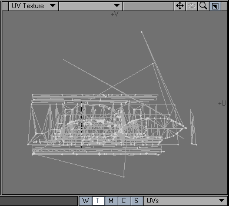

Rendering Lightmaps In Lightwave
Overview
![[fatm_meshugly]](images/fatm-meshugly.jpeg) This static mesh is in need of some better lighting. By contrast, the floor (a normal BSP brush) has much better defined lighting, making the bland lighting on the mesh look out of place. |
You've probably noticed (or read in The Curse of Static Meshes) that static mesh lighting is not very good in Unreal Tournament. To a certain extent this can be improved by tweaking the design of the static mesh (presumably by increasing the number of points in the mesh – since vertex lighting is used – and/or by creating more uniformly shaped polygons – long thin triangles seem to result in particularly bad lighting). However, often the only solution is to create your own lighting off-line (by rendering the object in Lightwave) and then to overlay it on the static mesh.
This section concerns creating your own lightmap in Lightwave, with particular emphasis on the steps needed to get the resulting lightmap overlaid on your static mesh in the Unreal Tournament editor. It is assumed that the reader is familiar with the basic raytracing/modelling concepts used in Lightwave.
Setting up
Creating a second UV map
Once your model is complete and textured (using a UV map to align materials and skins with the object), create another UV map called 'UV2' (you must use this exact name). Then map all of your polygons into this UV2 map such that there are no overlapping polygons in the UV space. An atlas UV mapping (selected in the Map→Make UVs tool window) usually achieves this, although some tweaking (merging of points, unwelding of points and manual manipulation of the UV mapping) is often required to ensure it.
It doesn't matter how you set up this UV map, although you'll probably get best results by ensuring that the relative proportions of surface areas are maintained with respect to the polygons of the object and their mapping in the 'UV2' plane.

This is the 'base' UV map used for applying materials such as the walkway metal texture (flr03ha from the HumanoidArchitecture texture set). And what a nice UV map it is too (cough). ![[fatm_UV2]](images/fatm-uv2.gif) This is the 'UV2' UV map for aligning the lightmap with the object. Note the lack of overlapping UVs. I suspect this map could be improved somewhat. |
If there are any overlapping UVs, you'll notice because you'll get some strange lighting artifacts on your object.
Adding a 'surface baker' shader
Select any of the visible surfaces in the object (it doesn't matter which one) and add a 'Surface baker' shader to that surface (select the 'shaders' tab in the surface browser, and click the 'Add Shader' button). In the surface baker properties, select 'UV2' as the UV map, and ensure that 'Bake Entire Object', 'Bake Diffuse' (although possibly not) and 'Bake Illumination' are selected, and that 'Bake Colour' is deselected. You may want to select a small bitmap size and no antialising for the first few passes just to make sure everything is working ok.
Typical (final) settings for the 'Surface baker' shader. Antialiasing really slows things down, but looks much nicer. |
Now any time you render the object in the Layout program, Lightwave will also (re)generate a lightmap for the object.
Rendering
Get your object into the Layout program and add lights in the appropriate places, bearing in mind that you may want/need to tile your object with itself or other objects. As mentioned above, all you need to do now is to render a frame (F9) and a lightmap will automatically be generated and saved to the specified location.
![[fatm_lightmap]](images/fatm-lightmap.jpeg) The lightmap generated by the Lightwave Layout program |
Importing into Unreal Tournament
You may need to vertically flip the generated image before it can be imported into the Texture browser via the normal method (i.e. via .tga files). You may want to put lightmaps into the MyLevel package to keep things clean. You can use different layouts with the same object in Lightwave to create different lightmaps for the same static mesh placed in different parts of the same level, for example. You can also compress the lightmap into a DXT5 texture, for example, to save space.
To apply the lightmap, select the static mesh in question (after importing it from Lightwave), select the lightmap texture, then apply it to the Display→UV2Texture property. You should then get a beautifully lit static mesh. You may also need to set Display→bUnlit to true, and/or set Display→bStaticLighting to false.
Rebuild your level to ensure the texture sticks around in MyLevel, then you should be done.
![[fatm_meshnice]](images/fatm-meshnice.jpeg) The same static mesh as before, with a lightmap on it. Note that the rendering wasn't perfect (the dark patches above the doorway), probably due to bad mesh design. The lighting is more dramatic, and the mesh looks a little nicer, and there is now a much better match with the lighting on the floor. |
Discussion
Fat Marrow:If anyone can tell me how to avoid that crappy lighting above the doorway, I'd be grateful. I don't get it if I unweld the points, but then I don't get smoothing either. (I am a bit of a Lightwave noob)
Related Topics
- Topics On Modeling
- Lightwave
- The Curse Of Static Meshes
- Building With Static Meshes
- Lightwave/UV Mapping